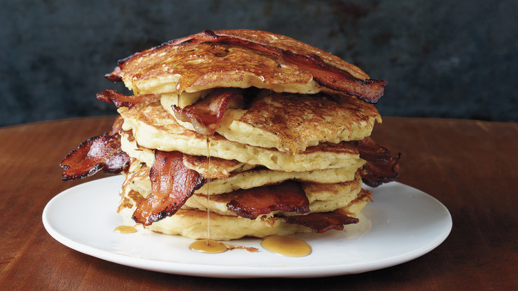

Bacon Pancakes
Home

Description
Made by Jake and he even sings a song about them.
Ingredients
- 1 cup all-purpose flour, (spooned and leveled)
- 2 tablespoons sugar
- 1 1/2 teaspoons baking powder
- 1/2 teaspoon baking soda
- 1/2 teaspoon coarse salt
- 1 1/4 cups buttermilk
- 2 tablespoons unsalted butter, melted
- 1 large egg
- 8 slices bacon
- Pure maple syrup, (optional)
Steps
- Preheat oven to 200 degrees.
- In a bowl, whisk together flour, sugar, baking powder, baking soda, and salt.
- In another bowl, whisk together buttermilk, melted butter, and egg.
- Whisk flour mixture into buttermilk mixture just until moistened, with small to medium lumps remaining.
- In a large cast-iron or nonstick skillet or on a griddle, cook bacon over medium-high until fat is rendered and bacon is browned on one side, 5 to 6 minutes.
- Flip and cook until golden and crisp on underside, 1 to 3 minutes.
- Drain bacon on paper towels; pour off all but 1 teaspoon fat from skillet.
- Heat skillet over medium. Pour 1/4-cupfuls batter into skillet and top each with a bacon slice.
- Cook until some bubbles appear on top of pancakes and a few have burst, about 2 minutes.
- With a spatula, carefully flip pancakes and cook until browned on underside, about 2 minutes.
- Transfer to a platter, bacon side up, and loosely tent with foil.
- Keep pancakes warm in oven and repeat with remaining batter, adding more bacon fat if needed.
- Serve with pure maple syrup, if desired.
Martha Stewart